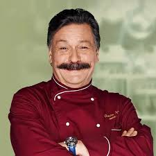
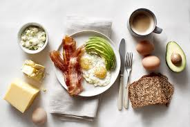
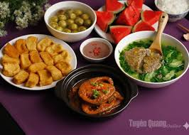
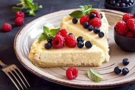

Минутка юмора от Шефа
"Инвалиды! Огузки! Если вы испортите это блюдо — пойдете чистить картошку до третьего пришествия!"
— Виктор Баринов знает толк в мотивации. А мы знаем, как научить вас готовить без нервов.

Наши направления

Бодрые завтраки

Семейные ужины
